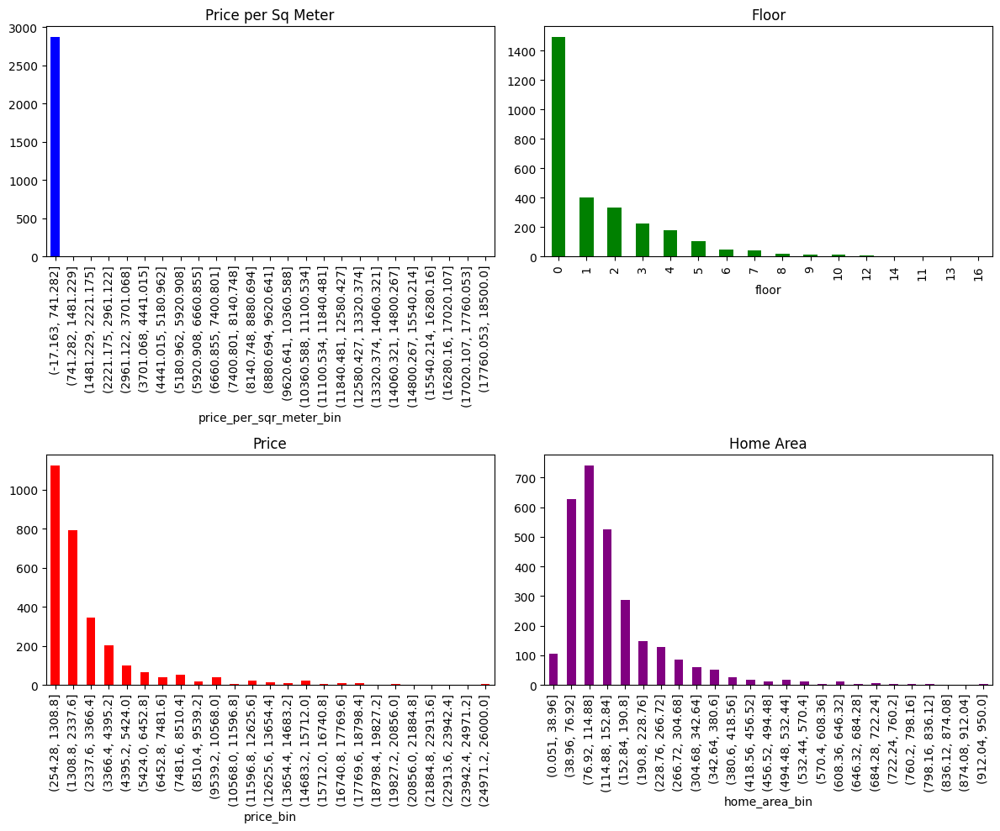
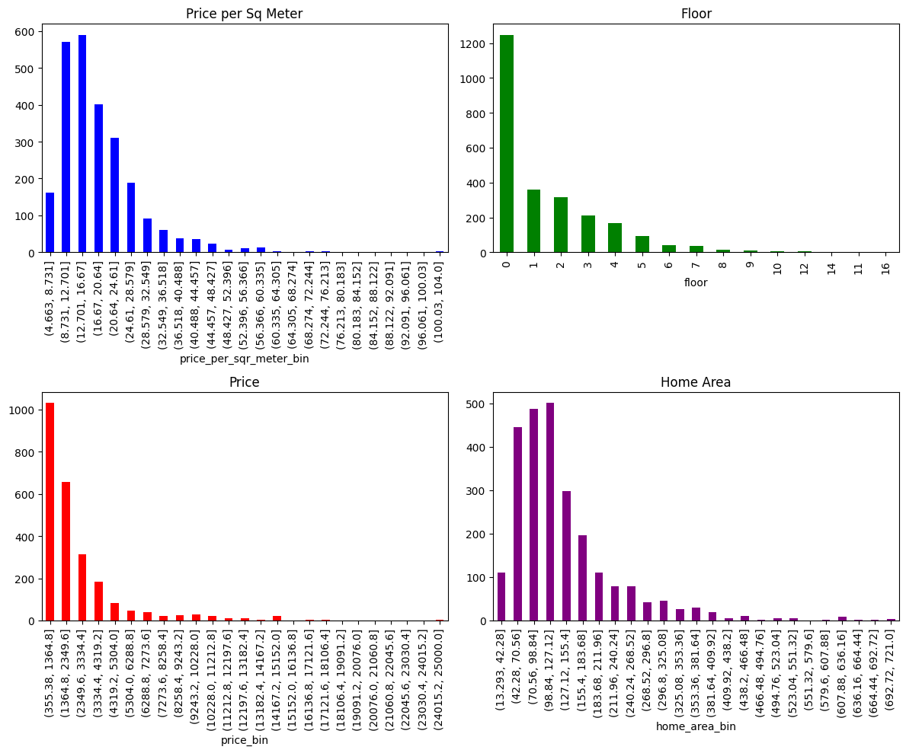
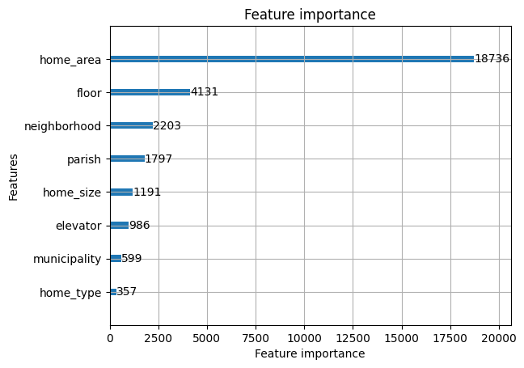
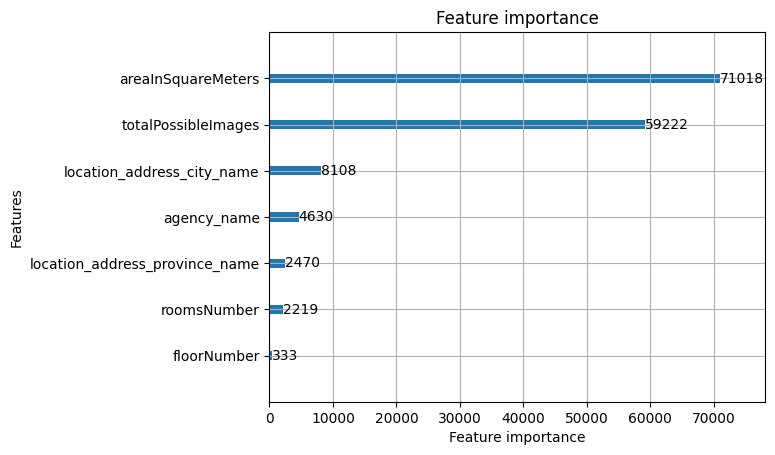

Regressing housing rent prices with LightGBM#
I will show the process behind the development of an housing pricing regressor to predict the rent prices given a feature set of housing properties, starting with the development of the first data models, model fine tuning and further improvement of data models. The model used for this purpose is LightGBM.
Models:
Basic LightGBM + Basic data structure
LightGBM finetuning + Basic data/w Named Entity Recognition
LightGBM finetuning + Data catalog
Keywords: LightGBM, regression modelling, price prediction, Idealista, Named Entity Recognition
Introduction#
The first data model derived from the source data was this table. We used some simple preprocessing functions to remove any outliers and then fit the model.
Data Collection and Preparation#
After the inital EDA of the data, the preprocessing approach was to filter the values by quantiles, grouped by city and home sizes.
before preprocessing 
358 rows were removed.
Original df: 2872
Filtered df: 2514
Code
def filter_city_group(group):
# Calculate quantiles within each group
c1 = group['price_per_sqr_meter'].quantile(0.99)
c2 = group['price'].quantile(0.99)
c3 = group['home_area'].quantile(0.99)
# Filter based on the upper quantiles
filtered_group = group[(group['price_per_sqr_meter'] <= c1) &
(group['price'] <= c2) &
(group['home_area'] <= c3)]
# Calculate the lower quantile for price_per_sqr_meter
c4 = filtered_group['price_per_sqr_meter'].quantile(0.025)
# Further filter the group
final_filtered_group = filtered_group[filtered_group['price_per_sqr_meter'] > c4]
return final_filtered_group
data = data.groupby(['city', 'home_size']).apply(filter_city_group).reset_index(drop=True)
after preprocessing 
LightGBM + Data Structure 1#
Model#
selected_features = ["home_type", "garage", "home_size", "floor", "elevator", "home_area", "municipality", "parish", "neighborhood"]
target = ["price"]
X_train, X_test, y_train, y_test = train_test_split(data.drop(columns=target),
data[target],
test_size=0.25,
random_state=42)
d_train=lgb.Dataset(X_train,
label=y_train)
params = {
'objective': 'tweedie',
'metric': 'rmse', # Root Mean Squared Error
'n_estimators': 1000,
'max_depth': 32,
'num_leaves': 2**6,
'learning_rate': 0.01
}
clf=lgb.train(params,
d_train)
Results#
Metric |
Value |
|---|---|
mean_squared_error |
1,501,528.9301146849 |
root_mean_squared_error |
1,225.3688955227665 |
mean_absolute_error |
627.2880019512329 |
median_absolute_error |
304.87489105188115 |
r2_score |
0.7919266926096962 |
mean_absolute_percentage_error |
0.2422117727534839 |
explained_variance_score |
0.791961664514626 |
max_error |
9,681.896126731974 |
For the first model we went super simple with a super out of the box approach. In addition, the EDA made me realize ‘tweedie’ objective function made more sense than regression.
The results are pretty decent. We can already tell the features in our dataset are somewhat meaningful to model rent prices by the r2_score. However, max error is crazy big and MAE and MEDAE are substancial.
LightGBM finetuning + Data Structure 1 (feature engineering)#
Feature engineering#
For the feature engineering, we decided to create a new variable “street_names” by extracting it from the title using a mix of pretrained Spacy Named Entity Recognition model and a fixed regex match for a list of special keywords.
street_keywords = {‘rua’, ‘avenida’, ‘beco’, ‘praça’, ‘travessa’, ‘estrada’, ‘alameda’, ‘largo’, ‘caminho’}
Code
def preprocess_text(text):
"""
Preprocesses the given text string by:
- Stripping whitespace from start and end.
- Converting all characters to lowercase.
- Replacing accented characters with their closest ASCII counterparts.
- Optionally: remove punctuation, digits, etc.
Args:
text (str): The text to preprocess.
Returns:
str: The preprocessed text.
"""
# Normalize to a consistent form
text = unicodedata.normalize('NFKD', text)
# Strip whitespace
text = text.strip()
# Convert to lowercase
text = text.lower()
# Replace accented characters with ASCII equivalents
text = text.encode('ascii', 'ignore').decode('utf-8', 'ignore')
# Remove specific unwanted characters such as newlines and slashes
text = re.sub(r'[\n/]', ' ', text) # Replacing them with a space
# Optionally: remove punctuation
text = re.sub(r'[^\w\s]', '', text)
# Optionally: remove digits
# text = re.sub(r'\d+', '', text)
return text
Extract street names from title#
def extract_street_name(text):
"""
Extracts the street name from a given text.
Args:
text (str): The input text from which to extract the street name.
Returns:
str: The extracted street name, or an empty string if no street name is found.
"""
doc = nlp(text)
street_keywords = {'rua', 'avenida', 'beco', 'praça', 'travessa', 'estrada', 'alameda', 'largo', 'caminho'}
for ent in doc.ents:
if ent.label_ == "LOC" and any(keyword in ent.text for keyword in street_keywords):
return ent.text
return ""
def clean_neighborhood_name(name, remove_words):
"""
Clean a single neighborhood name by removing specified words.
Args:
name (str): The neighborhood name to clean.
remove_words (set): A set of words to remove from the name.
Returns:
str: The cleaned neighborhood name.
"""
if len(name.split()) > 1:
pattern = r'\b(' + '|'.join(remove_words) + r')\b'
cleaned_name = re.sub(pattern, '', name, flags=re.IGNORECASE).strip()
cleaned_name = re.sub(r'\s+', ' ', cleaned_name)
else:
cleaned_name = name
return cleaned_name
remove_words = set(list(data["home_type"].unique()) + list(data["home_size"].unique()))
Extract street names from title#
def extract_street_names(text):
# Process the text
# doc = nlp(text)
# Filter out stop words
# filtered_sentence = ' '.join([token.text for token in doc if not token.is_stop])
"""Extract potential street names from a text string using spaCy's NER."""
doc = nlp(text)
# Customize entity labels based on observations and model performance
street_entities = ['LOC', 'PROPN']
street_names = [ent.text for ent in doc.ents if ent.label_ in street_entities]
return ' '.join(street_names)
data['street_names'] = np.where(data['street_names'] == '', data['neighborhood'], data['street_names'])
LightGBM finetuning#
Built a wrapper over optuna trials to find the best booster given the search space shown below. Optuna works by using an algorithm to go over the search space defined and then return the best score for the objective metrics.
Code
def callback_model(study, trial):
if study.best_trial.number == trial.number:
study.set_user_attr(key="best_booster", value=trial.user_attrs["best_booster"])
# Assuming X_train and y_train are already defined and available
evals = {} # initializing in global scope
def objective(trial):
# Train/test split
X_train_split, X_val_split, y_train_split, y_val_split = train_test_split(X_train, y_train, test_size=0.2, random_state=42)
evals = {}
# Suggest values for the hyperparameters
param = {
'objective': 'tweedie',
'tweedie_variance_power': trial.suggest_loguniform('tweedie_variance_power', 1.0, 1.8),
'metric': 'rmse',
'verbosity': -1,
# 'boosting_type': 'rf',
'lambda_l1': trial.suggest_loguniform('lambda_l1', 1e-3, 2.0),
'lambda_l2': trial.suggest_loguniform('lambda_l2', 1e-3, 2.0),
'num_leaves': trial.suggest_int('num_leaves', 32, 256),
'feature_fraction': trial.suggest_uniform('feature_fraction', 0.4, 1.0),
'bagging_fraction': trial.suggest_uniform('bagging_fraction', 0.4, 1.0),
'colsample_bytree': trial.suggest_loguniform('colsample_bytree', 0.4, 1),
'min_child_samples': trial.suggest_int('min_child_samples', 10, 100),
'learning_rate': trial.suggest_loguniform('learning_rate', 0.005, 0.2),
'n_estimators': 3000
}
# Create a LightGBM dataset
dtrain = lgb.Dataset(X_train_split,
label=y_train_split)
dvalid = lgb.Dataset(X_val_split,
label=y_val_split)
# Train the model
gbm = lgb.train(param, dtrain,
valid_sets=[dvalid],
callbacks = [
lgb.early_stopping(stopping_rounds= 100),
lgb.record_evaluation(evals),
])
# Predict on validation set
preds = gbm.predict(X_val_split,
num_iteration=gbm.best_iteration)
trial.set_user_attr(key="best_booster", value=gbm)
# Calculate RMSE
rmse = mean_squared_error(y_val_split,
preds,
squared=False)
return rmse
best iteration (took about 15 mins on CPU though)
Best trial:
RMSE: 769.3324520631095
Params:
tweedie_variance_power: 1.2887153888677096
lambda_l1: 0.0970823229464095
lambda_l2: 0.001987556236210949
num_leaves: 215
feature_fraction: 0.7394630777554029
bagging_fraction: 0.5254285845293489
colsample_bytree: 0.4406038125799569
min_child_samples: 19
learning_rate: 0.007207126518937185
Results#
Metric |
Value |
|---|---|
Mean Squared Error (MSE) |
602,776.7700695128 |
Root Mean Squared Error (RMSE) |
776.386997617498 |
Mean Absolute Error (MAE) |
367.0216836685397 |
Median Absolute Error |
134.60877328493183 |
R² Score |
0.8398658418155807 |
Mean Absolute Percentage Error |
0.1605847610960246 |
Explained Variance Score |
0.8400642395176007 |
Max Error |
7916.031221418012 |
LightGBM finetuning 2 + Data Structure reworked#
Developing a new datastructure: natural linkage#
The purpose of this new datastructure is to create a proper linkage between pages in the different levels of hierarchy of housing location.
Before
After
Basically I kept the same parsing class, but changed the parsing scope to a lower hierarchy level. Given that my parsing class takes a list of links, I just changed my list of links by creating a catalog.
Data catalog

In addition, this data catalog parsed every possible href in the website which resulted in more data points.
LightGBM finetuning 2#
Instead of using a combinatorial searching algorithm, I used the LightGBMTuner which is a sequential tuning algorithm. It’s much faster.
Code
from optuna.integration import LightGBMTuner
optuna.logging.set_verbosity(0)
def tune_hyperparameters(d_train, d_valid):
params = {
'objective': 'tweedie', # or 'tweedie' or any other suitable according to your task
'metric': 'rmse', # Evaluation metric
'boosting_type': 'gbdt',
'verbosity': 0 # Default boosting type
}
# Creating the tuner
tuner = LightGBMTuner(params,
d_train,
valid_sets=[d_valid],
num_boost_round=1000,
show_progress_bar = True) # Maximum number of boosting iterations
# Running the tuning
tuner.run()
print("Best score:", tuner.best_score)
best_params = tuner.best_params
print("Best params:", best_params)
best_booster = tuner.get_best_booster()
return best_params, best_booster
best_params, best_booster = tune_hyperparameters(d_train, d_valid)
dump(best_booster, 'model.joblib')
Results#
Metric |
Value |
|---|---|
Mean Squared Error (MSE) |
914,305.6904228394 |
Root Mean Squared Error (RMSE) |
956.1933331825941 |
Mean Absolute Error (MAE) |
483.77187192232515 |
Median Absolute Error |
233.53388034923205 |
R² Score |
0.8816127704566171 |
Mean Absolute Percentage Error |
0.1937938758957172 |
Explained Variance Score |
0.8817390606991876 |
Max Error |
13,460.365708323816 |
Results#
Model Performance Metrics#
Metric |
First Model |
Second Model |
Third Model |
|---|---|---|---|
Mean Squared Error (MSE) |
1,501,528.9301146849 |
602,776.7700695128 |
914,305.6904228394 |
Root Mean Squared Error (RMSE) |
1,225.3688955227665 |
776.386997617498 |
956.1933331825941 |
Mean Absolute Error (MAE) |
627.2880019512329 |
367.0216836685397 |
483.77187192232515 |
Median Absolute Error |
304.87489105188115 |
134.60877328493183 |
233.53388034923205 |
R² Score |
0.7919266926096962 |
0.8398658418155807 |
0.8816127704566171 |
Mean Absolute Percentage Error |
0.2422117727534839 |
0.1605847610960246 |
0.1937938758957172 |
Explained Variance Score |
0.791961664514626 |
0.8400642395176007 |
0.8817390606991876 |
Max Error |
9,681.896126731974 |
7,916.031221418012 |
13,460.365708323816 |
Note
First and Second Model share the same data structure, Second model has an additional engineered feature.
Third model has a different top-down data structure as result of a different hierarchical parsing approach.
The data capture changes between second and third model are notorious. Altough the Variance explainability increased, the errors increased as well. This is concerning and should be looked into.
One of the possible causes are:
the increase in locations and data points for new regions with low samples which can make generalization hard
presence of noise (max error is huge), suggests preprocessing should be refined
differences between traning and testing sets (add cross validation)
Feature Importance#
By far the most important variable to model housing prices is home area and the least important is home type (Apartment, House, etc).
However, I’m surprised floor was one of the most important variables. I have some suspicious floor and home_type might be somewhat linked and correlated, since floor = 0 likely means home_type is not an apartment.

Bonus: Regression on a different source#
This source has a GraphQL endpoint which makes this task much more convinient. The fact we get structured data out of the box is chefs kiss. I will apply the last model build out of the box. For the regressor, I picked the following features:
The reason why I picked these features is because there are quite a few attributes with lots of missing data (I’m assuming they are optional in the listings). I kept the maximum data possible.
Dataset size
4040 rows
Results#
Metric |
Value |
|---|---|
Mean Squared Error (MSE) |
2,982,434.8029515054 |
Root Mean Squared Error (RMSE) |
1,726.9727279119104 |
Mean Absolute Error (MAE) |
598.4506828602617 |
Median Absolute Error (MedAE) |
271.84776577479283 |
R2 Score |
0.4050391513547955 |
Mean Absolute Percentage Error (MAPE) |
0.23980102053405566 |
Explained Variance Score |
0.40884640176568077 |
Max Error |
20,629.283680784873 |
Metric |
LightGBM + Raw |
LightGBM + finetuning + feature engineering |
LightGBM + finetuning + data catalog |
Fourth Model |
|---|---|---|---|---|
Mean Absolute Error (MAE) |
627.29 |
367.02 |
483.77 |
598.45 |
Median Absolute Error (MedAE) |
304.87 |
134.61 |
233.53 |
271.85 |
R² Score |
0.7919 |
0.8399 |
0.8816 |
0.4050 |
Mean Absolute Percentage Error |
0.2422 |
0.1606 |
0.1938 |
0.2398 |

Haven’t look at this with attention to detail so it’s hard to compare datasets. They are somewhat of a similar size however.
Conclusions#
I’m happy with the results!.
Altough the results were far from optimal, I’m satisfied the predictors are able to capture a good chunk of variability in the regressor. There are some very promising applications of feature engineering as well as missing features which can be easily added to the model to further improve the scores. This is how I would improve this model:
Join multiple data sources by NUTS (non trivial as well, the data sources do not have simple relationship keys)
Develop a NER pipeline to capture street names when they exist (doable with pre trained NER models)
Develop a taxonomy system from the description and perhaps create my own NER model to capture this taxonomy (non trivial, requires me to label the data)
Add new features such as the number of images, length of title and description, name of agency (if exists)
House specific data which would require me to parse every single page in the site, instead of the catalog alone. (easy but would probably get me timed out by the server)
The MAPE and MAE suggest this model can hardly work in production to produce useful results.